book title:
META bespoke admin|build|methodology®
Most know of 'agile software development'. It's worth studying Agile even if you don't implement. META approach does not replace Agile, and it is not just a tech stack, or a build server; it is an approach to do web app development management. We don't think just a FW will make you 10X.
Our Goal: Deliver 10 X faster than today's software development. Ex: 5 dev in 6 months to be done 2 devs in 3 weeks. For example LAMP, the technology WordPress was built on. Every 10 years or so tech gets 10 times better FORCING everyone to upgrade. Assembly was 10 times better than machine language. C is 10 times better than Assembly. We believe that we found the answer on how to have a more productive team.
So far, somehow, SSR LAMP has dominated web deployments, with WP having some 30% of WWW - time to start displacing that.
The extra power of nbake can be used to 'tell the story better', by being more interactive in your UX. Experience shows that better UX translates to more user engaged and higher user retention.
We assume that everyone is web literate, for example: ' Design and Build Websites ' by Jon Duckett
We also assume that you will learn Pug.
About: helped develop MVC community in 2001


Prerequisites: J. Duckett book! A plus would be A. Grove or M. Lopp books

Interesting productivity out there.
I used to love for my devs to put ELK Stack on their bio.
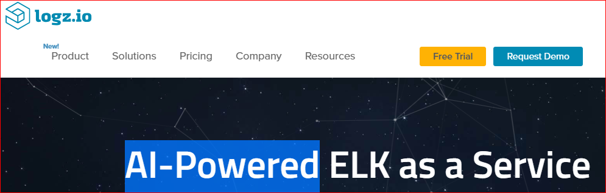Resume Driven development. Instead, would API make your project better?
Extreme Server-less.

Before serverless, we operated our own serer, like LAMP.

Video demo / preview
Deployment: a single command. Yes, Really!
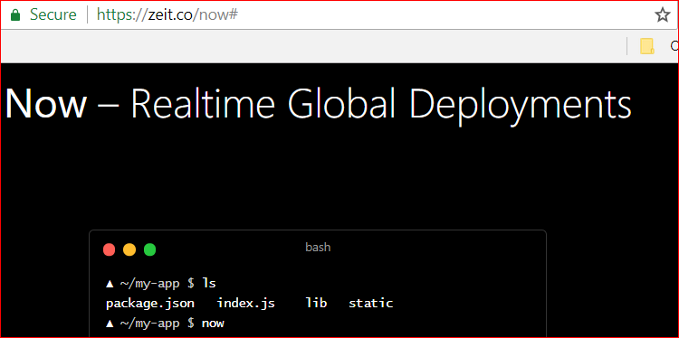No HTTP Server! Ex: S3. Or CDN.
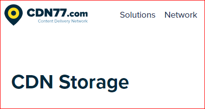Therefore: Statically generated!
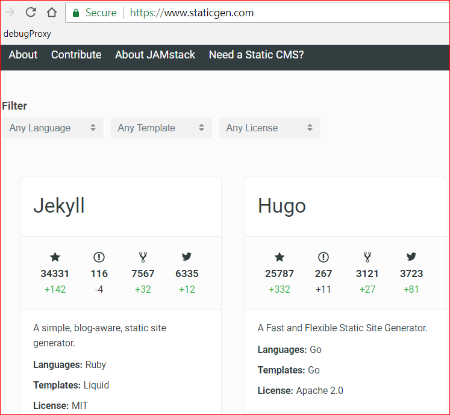What are you generating?

'Do you even Jade bro?' A google designer shows HTML self closing.
v1 Jade. v2 Pug. Do you know of Node?

Express uses pug. WWW samples are pug
CodePen uses Pug.
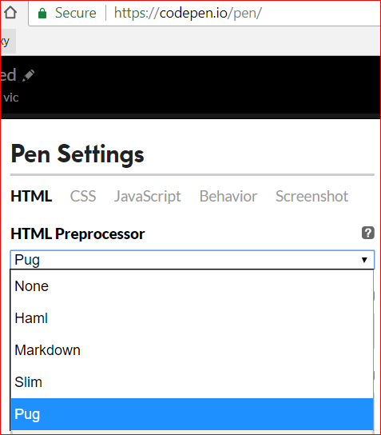Avoid HTML, use Pug
Build?
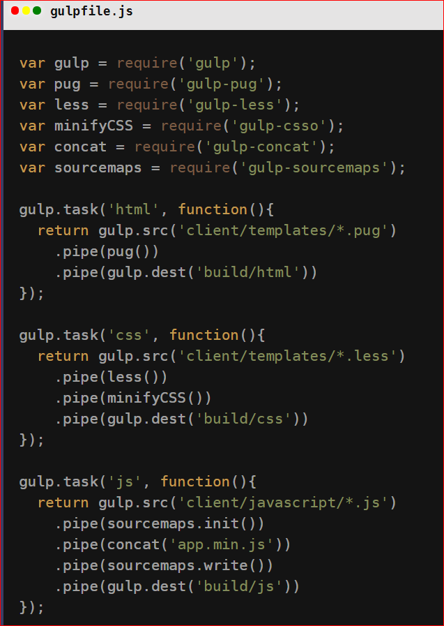Social SEO?

Some of this is repeated.

Scripted build via NPM!
Need for (NPM) scripted build!
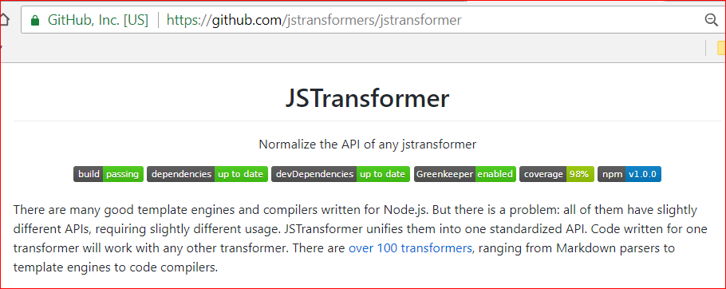This is the nexus.
Create a YAML file for repeated value.
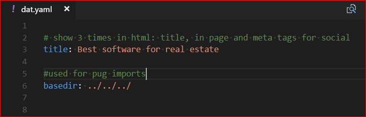And use a .js npm build script using latest API. Easier than proprietary.
YAML lets you create Data about your page.
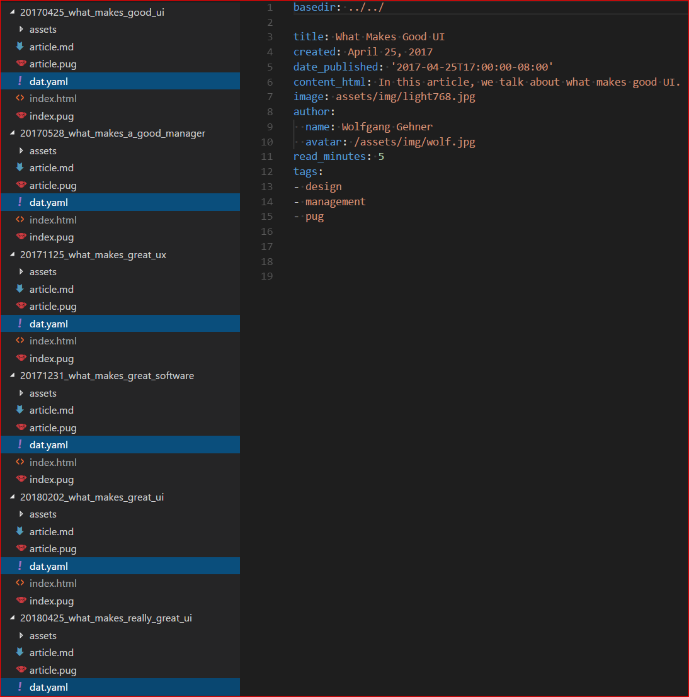IMPORTANT: LAMP minus M. 'There is no Spoon'
A script based build that does Pug + YAML: npm -g i nbake
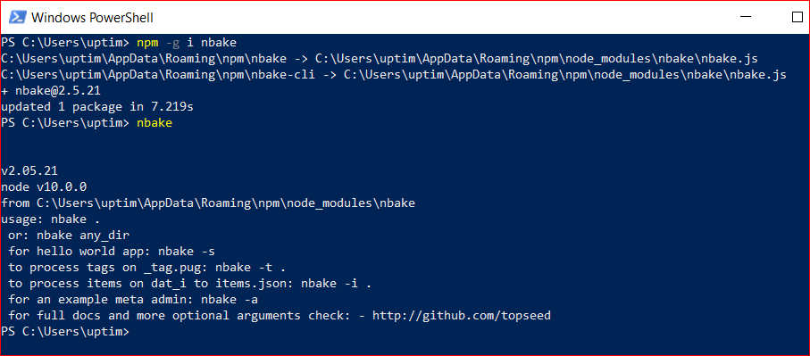Example project (like Static Gen )
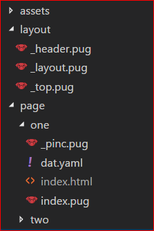- Some CMS use md. Hard to layout. Feel free to use pug instead of md.